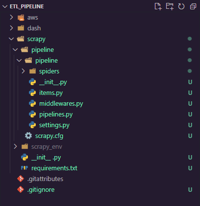
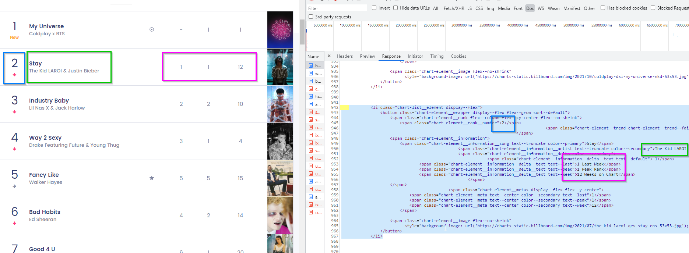
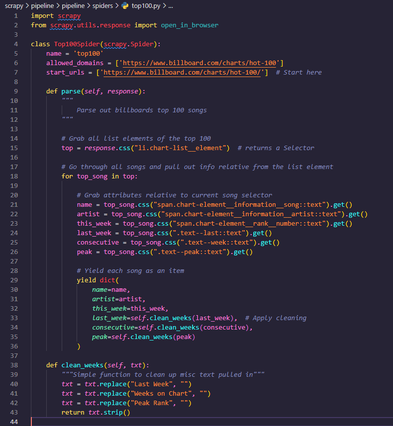
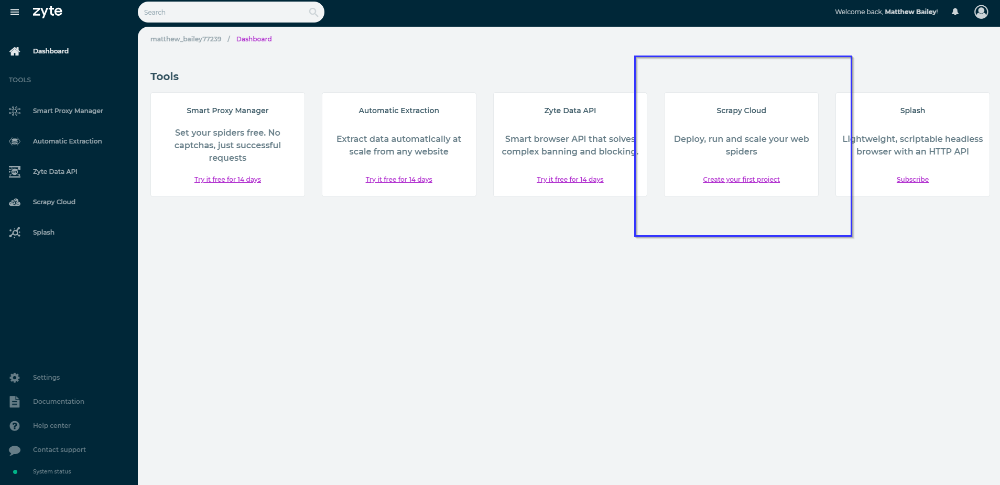
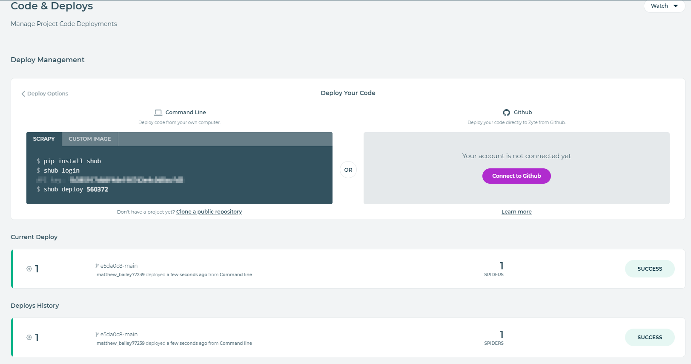
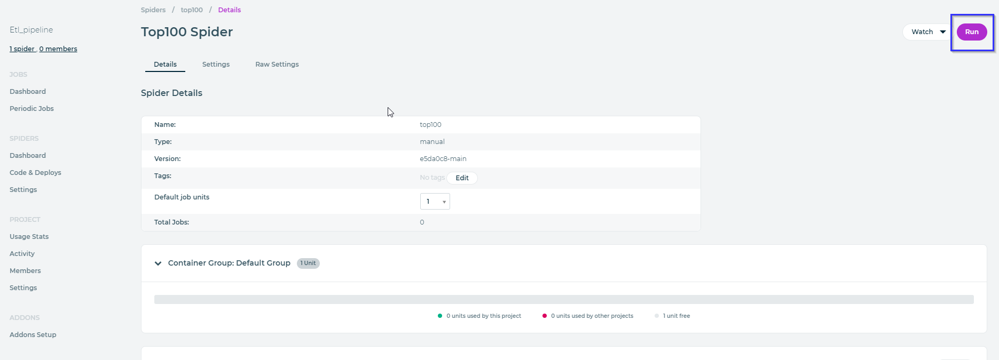
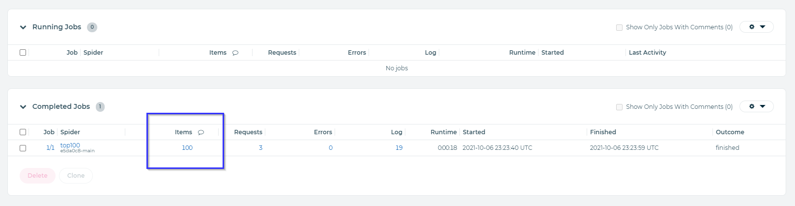
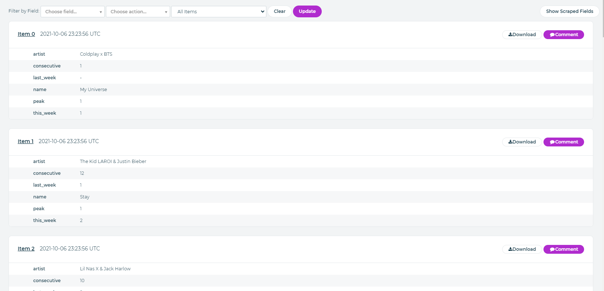

Part 1 - Setting up and collecting the data
1. Setup our environments and download libraries
The first thing we need to do is download the Scrapy Framework. If you're familiar with web scraping, you may have heard of this before but typically intro web-scraping tutorials will talk about requests and beautiful soup.
While these two are great resources, as you scale up operations of data collection, you'll typically run into certain roadblocks. These include proxy management, exporting, scaling, javascript, etc. There is a lot.
Scrapy aims to provide a framework to solve these and has been supported for quite a while now. Not to mention offers many extensions to modify behavior of any spider on the fly. When it comes down to one-off projects, the requests and beautiful soup path may be the best option.
If you plan to scale, Scrapy is your bet.
Create our project.
First thing first, lets setup our directory as follows. Some folders will be used for future lessons, but lets get setup out of the way.
├── aws
└─ aws_env
├── dash
└─ dash_env
├── scrapy
└─ scrapy_env
└── .gitignore
With all of them as empty folders for now. And our .gitignore file with a single entry.
# Ignore all our environments
*envThis will ignore any folder and subfolders ending in "_env" thus our environments
Next we create our virtual environment just for scrapy. Open a command prompt and navigate into our newly created scrapy\scrapy_env folder and run the following command.
C:\etl_pipeline\scrapy\scrapy_env>python -m venv
C:\etl_pipeline\scrapy\scrapy_env>Scripts\activate.bat
(scrapy_env) C:\etl_pipeline\scrapy\scrapy_env>
The second command should then activate our environment and we can proceed.
Lets head back into our scrapy directory and create our requirements.txt file. It should contain a single entry of "scrapy". After we have this file in the scrapy directory and are in that directory we should run the following to install it.
(scrapy_env) C:\etl_pipeline\scrapy>pip install -r requirements.txtWe should see scrapy download and be available for use within our environment now. Lets create a new scrapy project with the scrapy command "startproject".
(scrapy_env) C:\etl_pipeline\scrapy>scrapy startproject pipelineIf everything wen't well our entire project should look like this.
For now, we won't take too deep of a dive into the scrapy framework just yet. Instead, we'll get a spider up and running, then revisit all the configuration.
You won't have a spider yet, but first lets define our source we want to have a stream of data for. This will be different depending on what data you are interested in. For the purpose of this tutorial we will use the Billboard Top 100 chart.
2. Inspect our source
When looking at web scraping, we want to take a look at a few things.
- How is the data of interest loaded in? API or HTML
- Do we need to paginate?
- Can we exploit request parameters?
Let's take a look at the website source code and find out. If we navigate to https://www.billboard.com/charts/hot-100, we can right click and choose inspect (or F12, or ctrl+shift+C, or various other shortcuts). This will pop up the developer tools.
The first thing I typically do is go upon interacting with the site with the network tab open and inspect what happens. The first thing I check when loading in the page is to view the document loaded in. If this includes the data we need, chances are no API is used and we will need some sort of HTML parsing.
We can see here that this is indeed the case (at least for the basic information). There is a json formatted custom data attribute but we will go ahead and parse the html so we can explore that side of scrapy (we will be seeing a lot of json later, don't worry)
Our goal here is to grab the attributes of "This Week", "Last Week", "Peak Position", "Weeks on Chart", "Title", and "Artist". So lets create a spider to gather that info.
3. Create our spider
Step one is to have scrapy generate our spider, we can choose from some templates built into scrapy, or we can define our own as a /.templ file if we want to customize them. For now, we will just go ahead and use the "basic" template built in.
In our root project directory (where the scrapy.cfg lives), we can run the following genspider command.
(scrapy_env) C:\etl_pipeline\scrapy\pipeline>scrapy genspider --template=basic top100 www.billboard.com/charts/hot-100
> Created spider 'top100' using template 'basic' in module:
> pipeline.spiders.top100
And if we check out our spider we can see what it created for us.
import scrapy
class Top100Spider(scrapy.Spider):
name = 'top100'
allowed_domains = ['https://www.billboard.com/charts/hot-100']
start_urls = ['https://www.billboard.com/charts/hot-100/']
def parse(self, response):
pass
The attributes/methods created.
- name - The name of the spider, scrapy uses this name to invoke crawls.
- allowed_domains - The domains the spider is allowed to scrape.
- start_urls - This is a shorthand for the start_requests() method. Having this attribute set will automatically make a get request to the url and pass its response into the pre-defined method called "parse"
- parse(self, response) - The method to parse out the request defined by start_urls.
In our case, scrapy will internally make a request over to the billboard top 100 page and pass that response onto the method of parse for us to, well parse.
Using some selectors while inspecting our site, our parse method will look like the following.
We first found the elements holding a single song and grabbed all 100 of those.
We then looped over those 100 while using them as a starting point to dive deeper into those elements and find the info for the current song.
Once we got the info, we passed a few through a simple function to clean up the data and remove unneeded words. (Note these are still strings, we will take care of that later)
Then we yielded each one (creating a generator) and let scrapy do the rest.
Here is the first 3 objects output from the spider.
{'name': 'Stay', 'artist': 'The Kid LAROI & Justin Bieber', 'this_week': '2', 'last_week': '1', 'consecutive': '12', 'peak': '1'}
{'name': 'Industry Baby', 'artist': 'Lil Nas X & Jack Harlow', 'this_week': '3', 'last_week': '2', 'consecutive': '10', 'peak': '2'}
{'name': 'Way 2 Sexy', 'artist': 'Drake Featuring Future & Young Thug', 'this_week': '4', 'last_week': '3', 'consecutive': '4', 'peak': '1'}4. Prepare for automation
The final step is taking care of where we are going to run and call these from AWS. While there are a few options here, the simplest one is to use Scrapy Cloud (not to mention its free).
We are going to head over to the Zyte Signup Page and create a free account. Some of you may know this as Scrapy although they recently underwent a rebranding recently so this is their new new.
After signing up and confirming our email, we will be presented with a page with some offerings, the one we want (and the only free one) is Scrapy Cloud. Choose "Create your first project".
After choosing a fitting name for your project, we are going to hop right in deploy our first spider. If we navigate our way over to the "Code & Deploys" sidebar option, we will be presented with the following page.
Choose either the command line option or the github option. Be aware that you should be on the root of the project when deploying via command line.
After deploying, we should see the deploy page update in real time.
You've just deployed your first spider to the cloud, congradulations. The only thing left in this tutorial is to run it. Keep in mind, the free version of scrapy cloud only persists your data for 7 days. So if you plan to stop here, then make sure to export your data after runs. However we will set up some automation in the next part of the tutorial to run and process the data via AWS. This is merely a place to host our spiders in the cloud without much overhead.
To run our spider, head on over to the spiders page and choose the one we just created. Once on that page click run in the top right hand of the page.
Once finished, we can check the items it pulled in by going down to "Completed Jobs" and clicking the hyperlinked count of items.
We can verify and download the data from here. Or click on over to the next post where we will automate the starting and persisting of this data within AWS.
It is also worth noting that Scrapy Cloud offers services to automate these and persist data even longer for a subscription. If they fit your needs more than AWS than feel free to use them. For this tutorial however, we are going to pull them into AWS in order to leverage all the powerful tools they offer.